Using the theme editor
This article explains how to create and manage UI themes using the Godot editor and its theme editor tool. We recommend getting familiar with the basics behind GUI skinning/theming by reading Introduction to GUI skinning before starting.
The theme editor is a bottom panel tool that activates automatically, when a Theme resource is selected for editing. It contains the necessary UI for adding, removing, and adjusting theme types and theme items. It features a preview section for testing your changes live, as well as a window dialog for doing bulk operations of the theme items.
Creating a theme
Like any other resources, themes can be created directly in the file system dock by right-clicking and selecting New Resource..., then selecting Theme and clicking Create. This is especially useful for creating project-wide themes.
Themes also can be created from any control node. Select a control node in the scene
hierarchy, then in the inspector go to the theme property. From there you can
select New Theme.
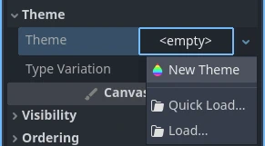
This will create an empty theme and open up the theme editor. Keep in mind that resources created this way are bundled with the scene by default. Use the context menu to save the new theme to a file instead.
While the theme editor provides the tools to manage theme types and items, themes also include the default, fallback font that you can edit only using the Inspector dock. Same applies to the contents of complex resource types, such as StyleBoxes and icons — they open for editing in the Inspector.
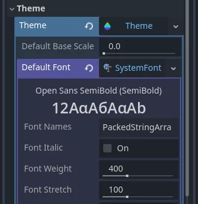
Theme editor overview
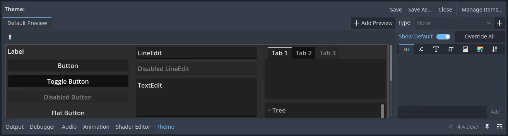
The theme editor has two main parts. The main theme editor, located at the bottom of the Godot editor, aims to provide users with tools to quickly create, edit, and delete theme items and types. It gives visual tools for picking and changing controls, abstracting the underlying theme concepts. The Manage Theme Items dialog, on the other hand, tries to address the needs of those who want to change themes manually. It's also useful for creating a new editor theme.
Theme previews
The left-hand side of the main editor has a set of preview tabs. The Default Preview tab is visible out of the box and contains most of the frequently used controls in various states. Previews are interactive, so intermediate states (e.g. hover) can be previewed as well.
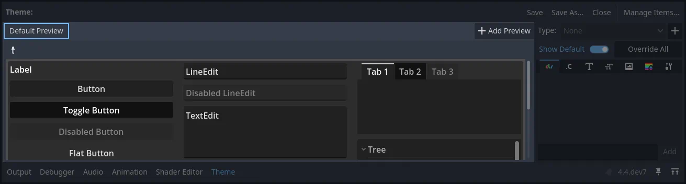
Additional tabs can be created from arbitrary scenes in your project. The scene must have a control node as its root to function as a preview. To add a new tab click the Add Preview button and select the saved scene from your file system.
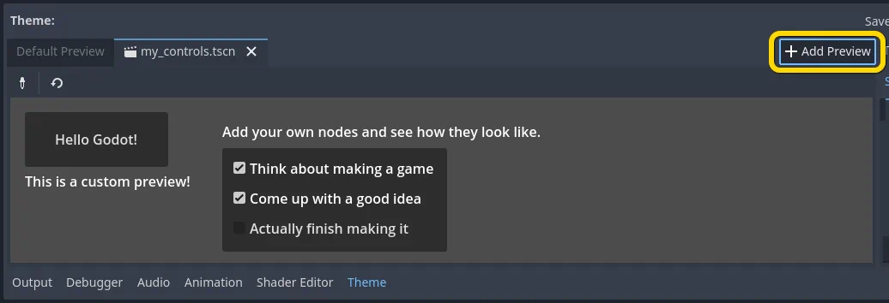
If you make changes to the scene, they will not be reflected in the preview automatically. To update the preview click the reload button on the toolbar.
Previews can also be used to quickly select the theme type to edit. Select the picker tool from the toolbar and hover over the preview area to highlight control nodes. Highlighted control nodes display their class name, or type variation if available. Clicking on the highlighted control opens it for editing on the right-hand side.
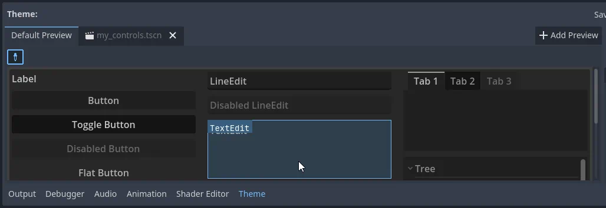
Theme types and items
The right-hand side of the theme editor provides a list of theme types available in the edited theme resource, and the contents of the selected type. The list of type's items is divided into several tabs, corresponding to each data type available in the theme (colors, constants, styles, etc.). If the Show Default option is enabled, then for each built-in type its default theme values are displayed, greyed out. If the option is disabled, only the items available in the edited theme itself are displayed.
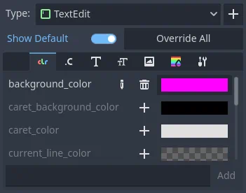
Individual items from the default theme can be added to the current theme by clicking on the Override button next to the item. You can also override all the default items of the selected theme type by clicking on the Override All button. Overridden properties can then be removed with the Remove Item button. Properties can also be renamed using the Rename Item button, and completely custom properties can be added to the list using the text field below it.
Overridden theme items can be edited directly in the right-hand panel, unless they are resources. Resources have rudimentary controls available for them, but must be edited in the Inspector dock instead.
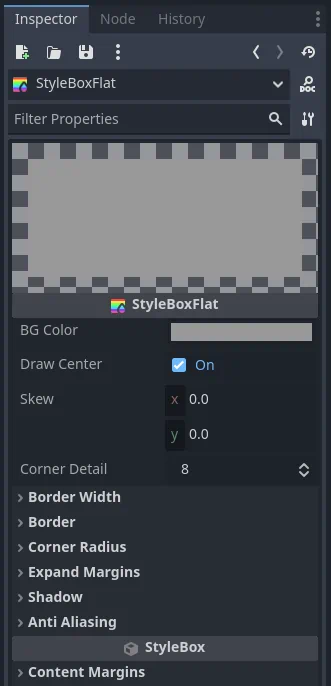
Styleboxes have a unique feature available, where you can pin an individual stylebox from the list. Pinned stylebox acts like the leader of the pack, and all styleboxes of the same type are updated alongside it when you change its properties. This allows you to edit properties of several styleboxes at the same time.

While theme types can be picked from a preview, they can also be added manually. Clicking the plus button next to the type list opens the Add item Type menu. In that menu you can either select a type from the list, or you can enter an arbitrary name to create a custom type. Text field also filters the list of control nodes.
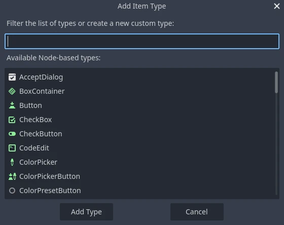
Manage and import items
Clicking the Manage Items button brings up the Manage Theme Items dialog.
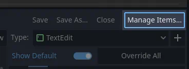
In the Edit Items tab you can view and add theme types, as well as view and edit the theme items of the selected type.
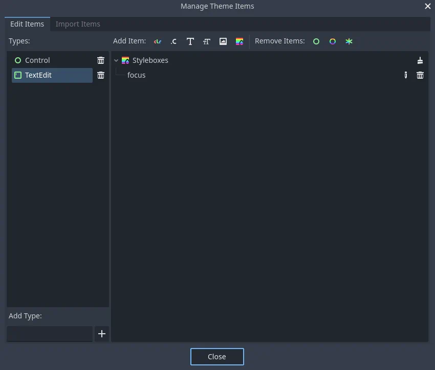
You can create, rename and remove individual theme items here by clicking the corresponding Add X Item and specifying their name. You can also mass delete theme items either by their data type (using the brush icon in the list) or by their quality. Remove Class Items will remove all built-in theme items you have customized for a control node type. Remove Custom Items will remove all the custom theme items for the selected type. Finally, Remove All Items will remove everything from the type.
From the Import Items tab you can import theme items from other themes. You can import items from the default Godot theme, the Godot editor theme, or another custom theme. You can import individual or multiple items, and you can decide whether to copy or omit their data as well. There are several ways you can select and deselect the items, including by hand, by hierarchy, by data type, and everything. Opting to include the data will copy all theme items as they are to your theme. Omitting the data will create the items of the corresponding data type and name, but will leave them empty, creating a template of a theme in a way.
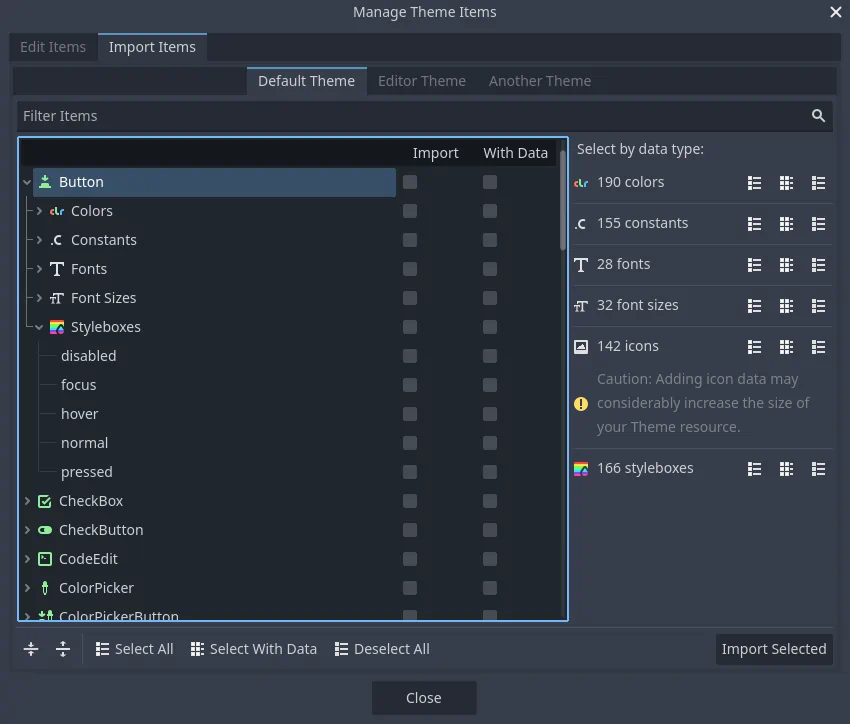